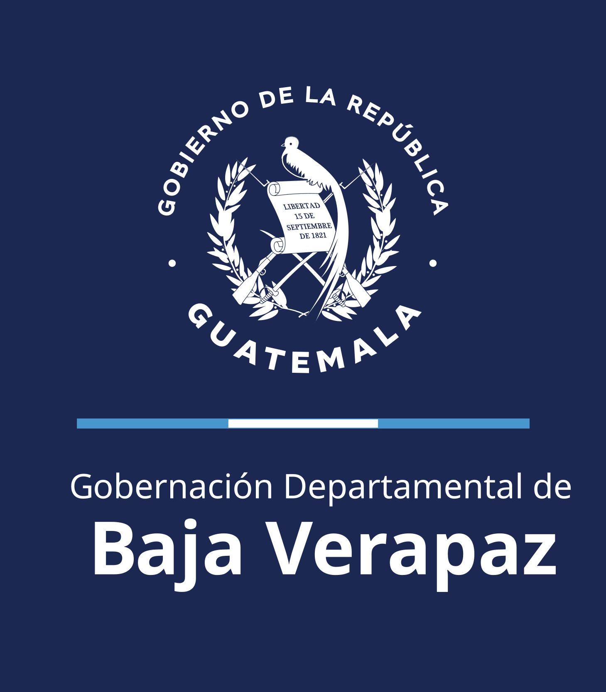

Comunicado Importante
Julio 2026
Página en Mantenimiento
Como parte de las mejores prácticas en gestión digital, estamos realizando mantenimiento en nuestra página web.
Leer más →
Ser el ente líder del sector público, capaz de organizar la administración pública en su jurisdicción, racionalizando los sistemas y procedimientos de trabajo y otorgando prioridad a los proyectos que viabilicen el desarrollo económico y social en el departamento.
Accede al reporte mensual de gestión y ejecución presupuestaria del departamento.
Ver reporte → 02Información pública de oficio entra a nuestro portal.
Ver formularios → 03Resoluciones de los sistemas de integridad, llena el formulario de manera confidencial y da seguimiento a tu denuncia.
Denunciar →Conoce la misión, visión y los valores que guían el trabajo de la Gobernación Departamental de Baja Verapaz.
La Gobernación Departamental de Baja Verapaz, es la Institución de la Presidencia de la República y del Ministerio de Gobernación responsable de coordinar la acción de las instituciones del Sector Público que operan dentro de su jurisdicción, velando porque los servicios públicos sean entregados a la población con calidad y oportunidad; promotora del desarrollo del departamento; así como, armonizadora de la relación entre el gobierno central (Organismo Ejecutivo) y el municipal, sin perjuicio de la autonomía de este último.
Ser la institución de gobierno departamental, líder y capaz de organizar la Administración Pública en su jurisdicción, racionalizando los sistemas y procedimientos de trabajo y otorgando las prioridades a los proyectos que viabilicen el desarrollo económico y social.
Justicia, Tolerancia, Lealtad, Igualdad, Honestidad, Solidaridad, Responsabilidad, Transparencia, servicio, honestidad e inclusión guían cada decisión y cada trámite que se realiza en esta institución.
Mantente al tanto de la gestión, los proyectos y los comunicados oficiales de la Gobernación.
Como parte de las mejores prácticas en gestión digital, estamos realizando mantenimiento en nuestra página web.
Leer más →El departamento está conformado por ocho municipios, cada uno con su propia riqueza cultural e histórica.
Comunícate con nosotros para trámites, consultas o solicitudes de información pública.

Fue designado en el cargo por el presidente Dr. Bernardo Arévalo y asumió oficialmente sus funciones el 13 de febrero de 2025. Su gestión se enfoca en el desarrollo rural, la seguridad ciudadana.
Desde el inicio de su mandato en la Gobernación Departamental de Baja Verapaz, ha impulsado una agenda de trabajo basada en la transparencia, la inclusión y el fortalecimiento de la infraestructura local